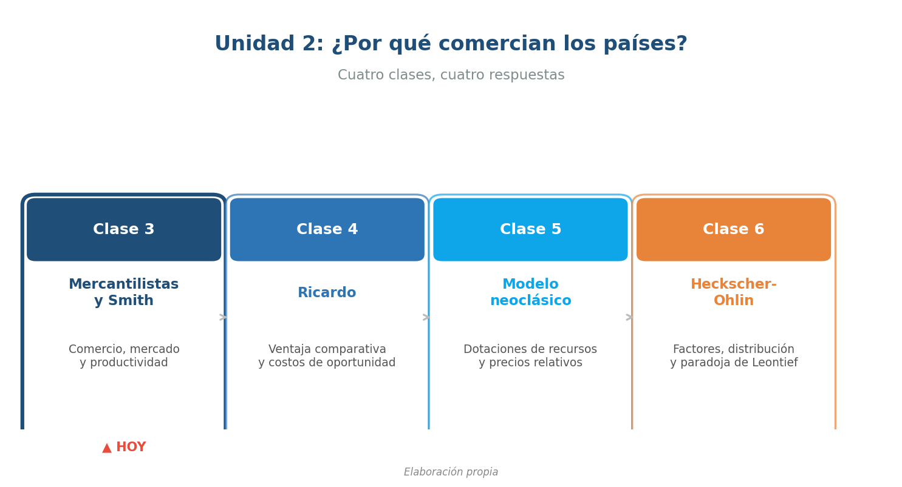
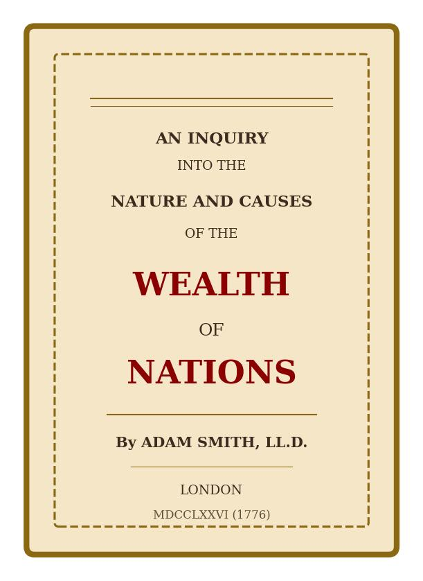
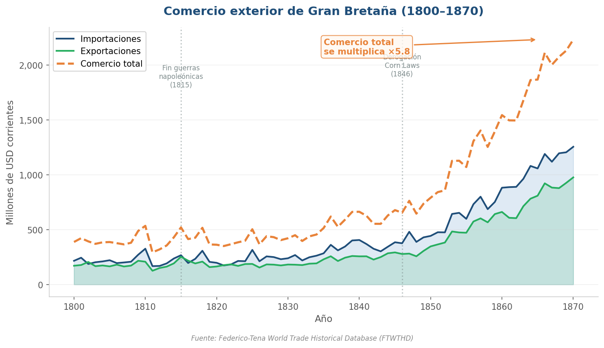
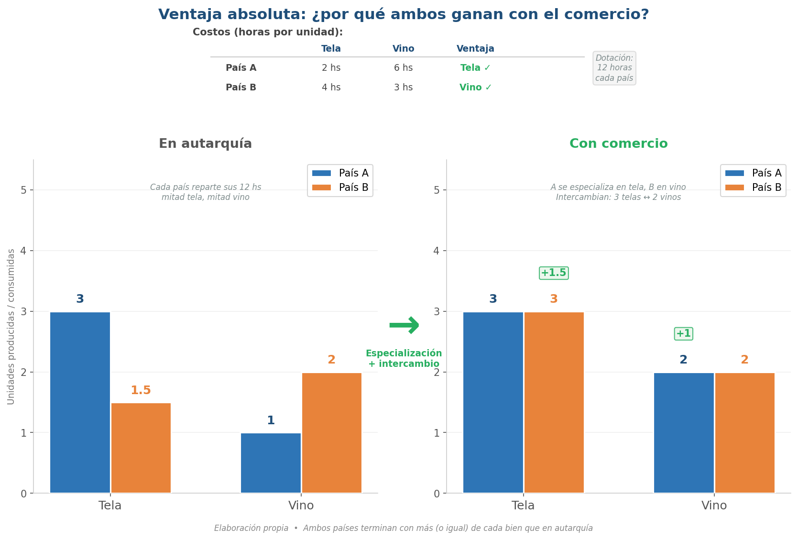
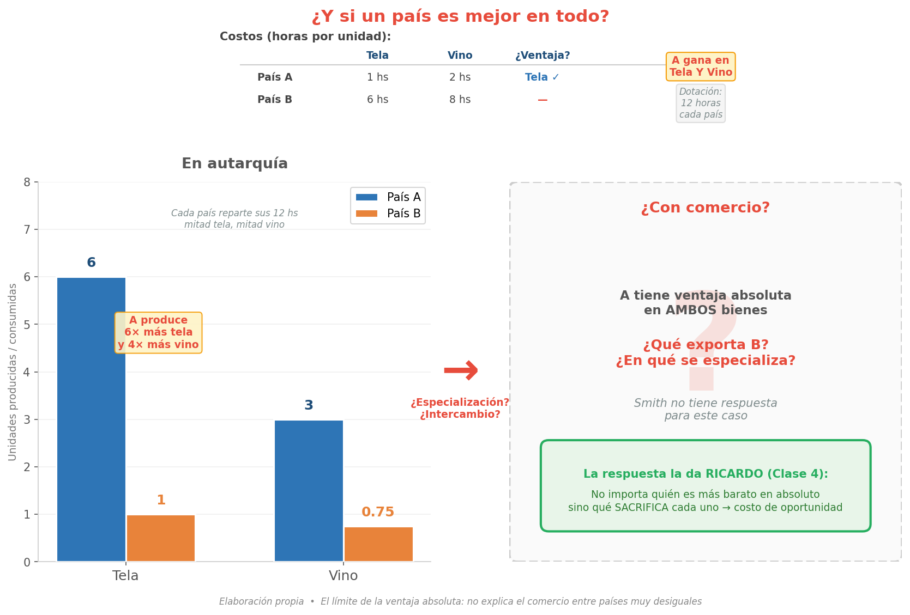

Economía Internacional — Clase 3
Mercantilistas y Adam Smith: el debate sobre el comercio
UMET - Licenciatura en Economía | 2026
Unidad 2: ¿Por qué comercian los países?

Fuente: Elaboración propia
- **Clase 3** (hoy): Mercantilistas y Smith — comercio, mercado y productividad
- **Clase 4**: Ricardo — ventaja comparativa y costos de oportunidad
- **Clase 5**: Modelo neoclásico — dotaciones de recursos y precios relativos
- **Clase 6**: Heckscher-Ohlin — factores, distribución y paradoja de Leontief
Agenda: Mercantilistas y Smith
- De la historia a la teoría: el puente T-R-P
- El mundo mercantilista: comercio como poder
- Adam Smith: riqueza, productividad y división del trabajo
- Ventaja absoluta: el primer modelo de comercio
- Los límites de Smith: anticipo de Ricardo
El mundo mercantilista (siglos XVI-XVIII)

Fuente: Elaboración propia
- No es una "escuela" unificada: son ideas compartidas por asesores de cortes europeas
- Contexto: imperios coloniales, rutas marítimas, competencia entre potencias
- **Idea central**: la riqueza de una nación = acumulación de metales (oro y plata)
- Comercio = **juego de suma cero**: si uno gana, otro pierde
Mercantilismo: políticas y lógica
El "manual" del comercio como poder
- **Objetivo**: superávit comercial permanente (exportar más que importar)
- **Aranceles y prohibiciones**: proteger producción nacional, limitar importaciones
- **Monopolios comerciales**: compañías con exclusividad (East India Co., VOC holandesa)
- **Colonias como mercado cautivo**: fuente de materias primas + destino de manufacturas
- **Navigation Acts** (Inglaterra, 1651): solo barcos ingleses pueden comerciar con colonias
Tecnología, Reglas y Poder: dos visiones del comercio

Fuente: Elaboración propia a partir del marco de Clase 1
- **Mercantilismo**: Poder domina → Reglas restrictivas → Tecnología secundaria
- **Smith**: Tecnología domina (productividad) → Reglas deben liberalizarse → Poder no debe distorsionar
- En la Clase 1 usamos T-R-P para leer la HISTORIA
- Ahora lo usamos para leer las TEORÍAS
Adam Smith (1776): una nueva idea de "riqueza"

Fuente: Adam Smith, An Inquiry into the Nature and Causes of the Wealth of Nations (1776)
- **Mercantilismo**: riqueza = metales (oro/plata) + poder del Estado
- **Smith**: riqueza = capacidad de producir bienes y servicios (ingreso real)
- El comercio no es juego de suma cero → puede ser **mutuamente beneficioso**
- El problema no es "vender más que el otro" sino **producir más con el mismo trabajo**
División del trabajo: el motor de la productividad

Fuente: Elaboración propia
- **Especialización** → más destreza → ahorro de tiempos → innovación en herramientas
- Resultado: **más productividad** → menores costos → más producción
- Pero la especialización tiene un límite: **el tamaño del mercado**
- Comercio (interno y externo) **amplía el mercado** → habilita más división del trabajo
"La división del trabajo está limitada por la extensión del mercado"

Fuente: Federico-Tena World Trade Historical Database
- Sin comercio: el mercado es solo el mercado interno
- Con comercio: el mercado se expande → más oportunidades de especialización
- Gran Bretaña siglo XIX: el comercio imperial amplió mercados y acompañó la Revolución Industrial
- Lección smithiana: **comercio → mercado mas grande → especialización → productividad → riqueza**
Ventaja absoluta: ¿por qué ambos ganan con el comercio?

Fuente: Elaboración propia
- **Ventaja absoluta**: un país produce un bien con menos trabajo que otro (costo absoluto menor)
- A necesita 2 hs por tela (B necesita 4) → A tiene ventaja en tela. B necesita 3 hs por vino (A necesita 6) → B tiene ventaja en vino
- En **autarquía** cada país reparte su tiempo → produce poco de ambos bienes
- Con **comercio**: cada uno se especializa + intercambian → ambos terminan con **más**
Smith y la política comercial: no es dogma
Crítica a restricciones... con matices
- **Crítica a monopolios**: distorsionan precios y frenan competencia
- **Crítica a restricciones coloniales**: benefician a grupos específicos, no al bienestar general
- Pero Smith reconoce excepciones: defensa nacional, represalia, industrias estratégicas
- El debate no es "libre comercio sí o no" sino **¿quién gana y quién pierde con cada restricción?**
¿Y si un país es mejor en todo?

Fuente: Elaboración propia
- A produce tela con 1 hs y vino con 2 hs. B necesita 6 y 8 hs → A tiene ventaja absoluta en **ambos**
- En autarquía: A produce 6 telas y 3 vinos, B apenas 1 tela y 0.75 vinos
- Según Smith: A debería producir todo. ¿Entonces B no exporta nada?
- Pero en la realidad **sí hay comercio** entre países desiguales → Smith no tiene respuesta
Después del recreo: Ricardo y la ventaja comparativa
La pieza que falta
- Ricardo (1817): la ventaja comparativa — **costos relativos**, no absolutos
- Contexto político: las Corn Laws y el debate por el precio del pan en Inglaterra
- Formalización: costos de oportunidad, frontera de posibilidades de producción, ganancias del comercio
- La pregunta que resuelve: ¿por qué comercia un país que es "peor en todo"?
Lo que vimos hoy
- **Mercantilismo**: comercio = poder, riqueza = oro, juego de suma cero
- **Smith**: riqueza = productividad, comercio amplía mercado → más división del trabajo
- **Ventaja absoluta**: cada país produce lo que hace más barato (caso simple)
- **Límite**: si uno es mejor en todo, Smith no alcanza → entra Ricardo
- **T-R-P**: mercantilistas pesan poder, Smith pesa tecnología — cada teoría tiene su lente
Lecturas para esta clase
Bibliografía del curso
- **Lugones, G. et al.** — Teorías del Comercio Internacional: sección sobre mercantilismo, Smith y ventaja absoluta
- **Krugman, Obstfeld & Melitz** — Economía Internacional: capítulo introductorio a teorías del comercio
- Para contexto histórico: revisar notas de Clase 1 (etapas del comercio, marco T-R-P)
Material complementario
Videos y documentales recomendados
- **"Commanding Heights: The Battle for the World Economy"** (PBS, 2002, Ep. 1) — De mercantilismo a Bretton Woods: el debate de ideas que define políticas comerciales
- **Ray Dalio — "Principles for Dealing with the Changing World Order"** (YouTube, 43 min) — Ciclos de poder y comercio a lo largo de la historia
- **"The Ascent of Money"** (Niall Ferguson, 2008) — Historia financiera: cómo el comercio y las finanzas transforman las naciones
¿Preguntas?
Economía Internacional | Clase 3